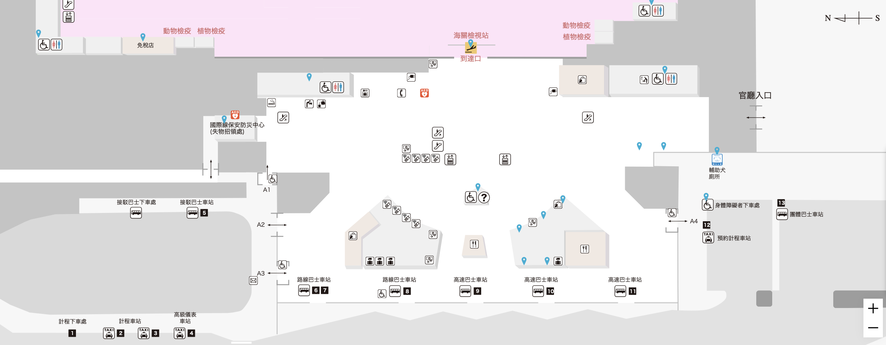
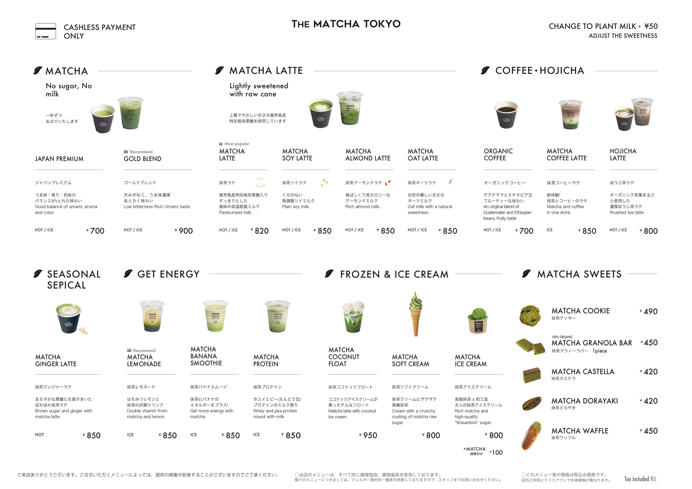
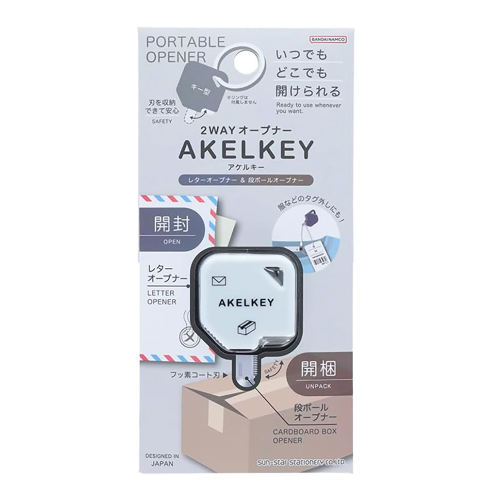

🇯🇵
Fukuoka
Japan2026.06.18 - 06.21
4 Days
Day 1 06/18 (Thu)
🌤️ 25° / 30° ｜ ☔ 20%
Day 1 / 4
出發福岡 • 快樂旅程開始
🛫 去程航班資訊
TPE 台北 FUK 福岡
AirAsia
AK 1510
起飛12:00
飛行時間2h 20m
抵達15:20
託運行李20 kg
手提行李7 kg
🏨 住宿資訊
飯店名稱
天神西通 Richmond 飯店
2 Chome-6-16 Tenjin, Chuo Ward, Fukuoka
Google Maps
Check-in14:00 後
Check-out11:00 前
🗓️ 今日行程
交通小撇步
福岡機場➡️地下鐵1. 出關後右轉: 找尋標示「国際線連絡バス」的指引。
2. 搭乘免費接駁車: A2出口，4 號或 5 號月台。
3. 抵達國內線: 依照指示搭乘電扶梯到 B1，即可到達地下鐵「福岡機場站」。
搭乘往「筑前前原」或「唐津」方向的列車，坐 5 站（約 11 分鐘）

09:00
前往桃園機場
機場捷運
10:00
辦理登機
第一航廈
12:00
搭機 (AK 1510)
航程約 2h 20m
15:20
入境 / 領取行李
福岡機場
16:00
THE MATCHA TOKYO
📝 Ice Matcha Latte、Ice Hojicha Latte (出境後)

16:30
搭乘空港線：福岡機場站 → 天神站
地下鐵西7出口
17:00
天神西通Richmond飯店
Check-in 飯店大廳在2F
18:30
大名黑豚吉列豬扒
「黑豚 特ロースかつ御膳 (200g)」➔ 2,300円
「黑豚 シャトーブリアン ヒレかつ御膳 (140g)」➔ 3,000円
「黑豚 シャトーブリアン ヒレかつ御膳 (140g)」➔ 3,000円
21:00
かわ屋 祇園店
烤雞皮*10
Day 2 06/19 (Fri)
☁️ 24° / 28° ｜ ☔ 40%
Day 2 / 4
🧸 生日快樂！🥳
🗓️ 行程內容
交通小撇步
方案A：「West Coast Liner」 高速巴士1. 上下車：天神 3 丁目，直達「二見ヶ浦・月と太陽糸島茶房前」。
2. 去程末班車14:42 / 回程末班車17:31。
11:30
Hungry Heaven
步行7分鐘
12:20
藍瓶咖啡
步行3分鐘
12:30
抵達分岔點
視天氣與體力，決定接下來的行程：
Best Plan
方案 A：去糸島白色鳥居
方案 B：下雨去福岡塔
13:00
景點：Fukuoka Tower
19:00
博多水炊鍋専門 橙
水炊鍋¥4,150 + 雜炊¥350 + 唐揚炸雞¥160/塊
Day 3 06/20 (Sat)
☀️ 26° / 31° ｜ ☔ 10%
Day 3 / 4
福岡探索 🛍️

Day 4 06/21 (Sun)
🌧️ 23° / 26° ｜ ☔ 80%
Day 4 / 4
最後採買 • 平安歸國
🛫 回程航班資訊
FUK 福岡 TPE 台北
AirAsia
AK 1511
起飛16:20
飛行時間2h 30m
抵達17:50
託運行李20 kg
手提行李7 kg
生活雜貨

sun-star AKELKEY 2WAY萬用開箱器
已購買
¥ ???
LOFT, HANDS
藥妝
Pabron Gold A
已購買
¥ ???
唐吉訶德
📝 購物備忘錄
💰 簡易匯率換算
輸入日幣，換算台幣 (以 0.21 計算)
NT$ 0
🆘 緊急求助
遇到緊急狀況請保持冷靜。